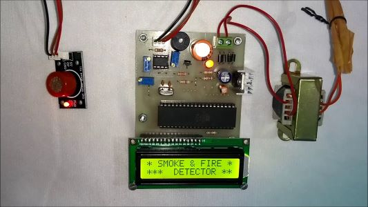

Fire Alarm Circuit (Embedded Project)
About Project:
- Fire alarm circuit with a temperature sensor may be used to secure home
from fire hazards.
- When the temperature in a room will cross a particular limit, it will trigger
the circuit to sound an alarm.
Technologies Used:
- Embedded project using Integrated circuits
- Keil uVision,Arduino IDE

© Jay Kolhe. All rights reserved